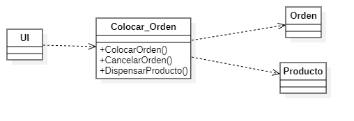

Pregunta de Elección Múltiple Pregunta Haces parte de un equipo para el desarrollo de un sistema para máquinas dispensadoras, en las que la persona podrá colocar una orden a partir de una combinación de botones, o cancelar la orden que está realizando. De acuerdo con el enunciado anterior se realizó el siguiente diagrama:  Diagrama de clases De acuerdo al diagrama, ¿Qué tipo de controlador se está utilizando? Respuestas Opción 1 Controlador de fachada. Opción 2 Controlador de caso de uso. Opción 3 Controlador saturado. Retroalimentación Incorrecto Correcto En esta situación se utilizó un controlador de caso de uso, a partir del caso de uso “colocar órdenes” con el fin de tener un ambiente más focalizado, facilitando su comprensión y mantenimiento al momento de realizar futuras adiciones. Incorrecto Solución Incorrecto (Retroalimentación) Opción correcta (Retroalimentación) Incorrecto (Retroalimentación)